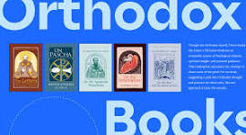
Explore and Read Spiritual Books to improve your way of leading life and live with joy and wisdom.
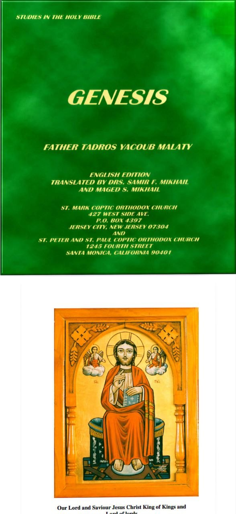
This book provides a spiritual introduction to the Holy Bible, focusing on creation, the early history in Genesis, and the lives of the patriarchs. It highlights the relationship between God and humanity while pointing to Our Lord and Saviour Jesus Christ as the center of Scripture. It encourages readers to grow in faith and develop a daily habit of spiritual reading.
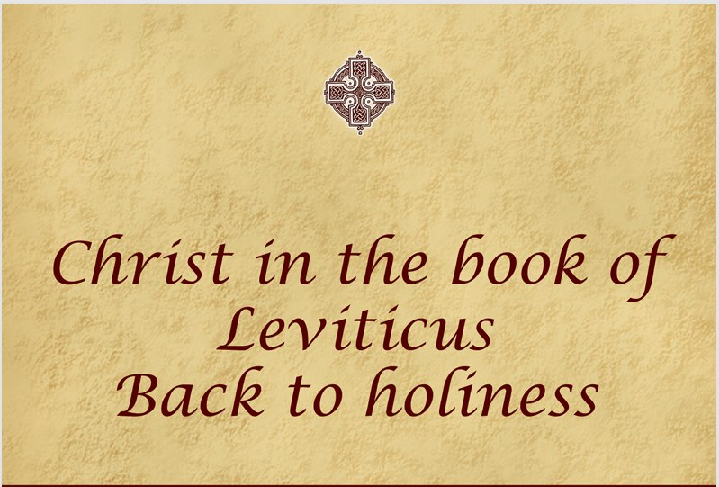
This book reveals the message of holiness through the Book of Leviticus, showing how God calls His people to return to a holy life. After freeing humanity from the bondage of sin, like the خروج from Egypt, God invites us to live in His presence through love, obedience, and worship. The teachings highlight Christ as the true offering, who gave Himself for our salvation, and as the perfect High Priest who leads us into holiness. Through sacrifices, priesthood, and spiritual discipline, the book explains how believers can grow in faith, be cleansed, and live a life that reflects God’s holiness.
This book presents a spiritual reflection on the journey of humanity from creation to redemption. It shows how man, after turning away from God, fell into weakness and spiritual bondage, symbolized by the descent into Egypt. Yet, in His great love, God did not abandon His people but revealed Himself as the Savior who sees their suffering and delivers them. Through His divine plan, fulfilled in Our Lord and Saviour Jesus Christ, the reader is invited to understand God’s love, experience freedom from sin, and grow in a life of faith and spiritual renewal.
“The Hand of God is Upon Me” presents a spiritual explanation of the Book of Ezra. It focuses on how God leads, supports, and restores His people, encouraging readers to trust in His guidance and grow in their spiritual journey.
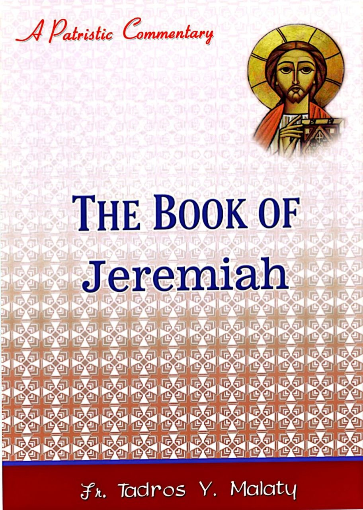
This book explains the call of the prophet Jeremiah and the mission God gave him. It highlights the importance of faithfulness, humility, courage, and trust in God. It teaches that true spiritual service begins with a divine calling and requires commitment, love, and strength to fulfill God’s purpose.
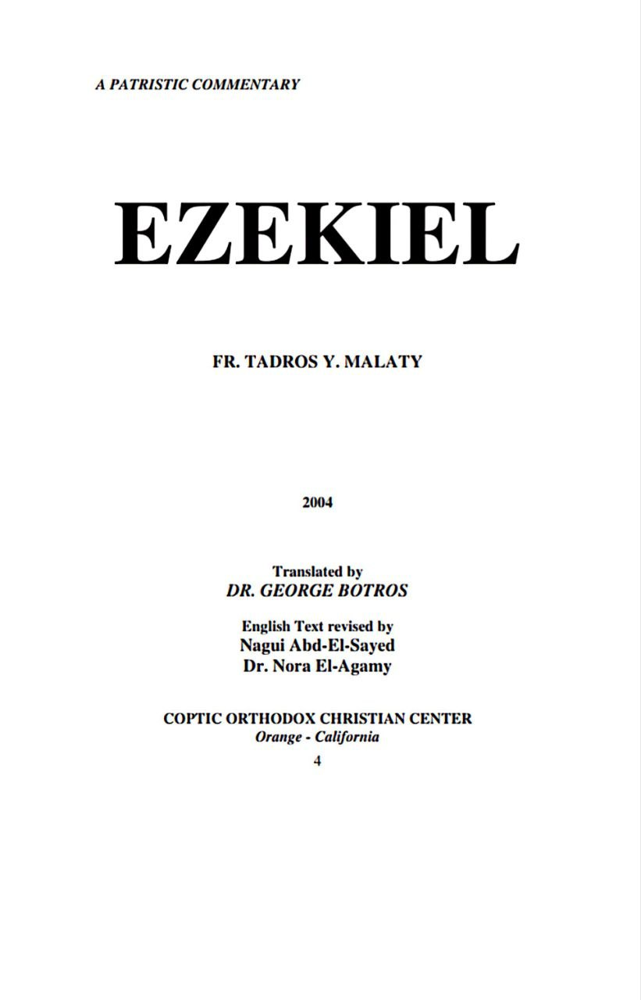
This book presents a patristic commentary on the Book of Ezekiel, explaining its spiritual meanings through the teachings of the early Church Fathers. It helps readers understand prophetic messages, divine visions, and the call to repentance and renewal.
The Book of Daniel shows how God remains in control even during difficult times. It teaches that faith, trust, and faithfulness allow believers to overcome trials and grow spiritually. Through Daniel’s life, we learn that God supports His people, gives them wisdom, and guides them to fulfill their purpose wherever they are.
This reflection presents Jonah not only as a prophet who fled from God, but as one who struggled with a deep love for his people. It shows how God transformed his weakness into a mission of salvation for others, revealing that divine purpose can work even through human failure. Jonah is also seen as a symbol of Christ, who gives Himself for the salvation of the world.
This book presents the acts and mission of the Apostles after Christ’s ascension, showing how His teachings were fulfilled in their lives. It highlights the work of the Holy Spirit, the growth of the early Church, and the transformation of the disciples into strong and faithful servants who spread the message of Christ with courage, unity, and love.
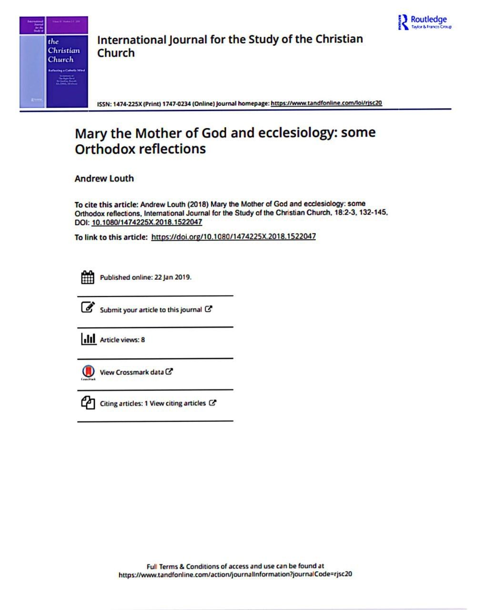
This reflection explores the role of Mary, the Mother of God, in Orthodox theology and her deep connection with the Church. It presents Mary as a model of faith, purity, and spiritual motherhood, showing how she represents the Church itself. The text highlights her unique role as a bridge between God and humanity, guiding believers toward a deeper spiritual understanding.
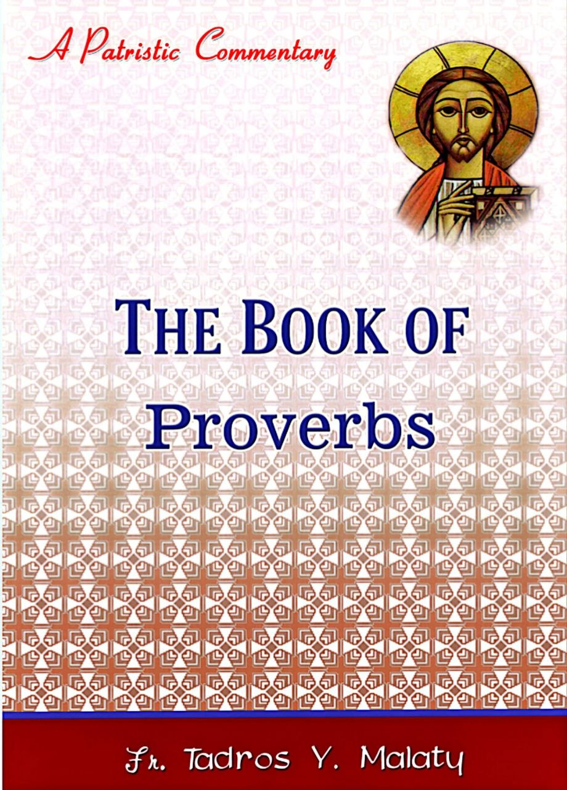
The Book of Proverbs is a collection of wise teachings that guide both spiritual and daily life. It provides clear instructions on moral choices, emphasizing discipline, understanding, and the importance of trusting in God. Through simple yet powerful sayings, it helps believers live a meaningful and righteous life.
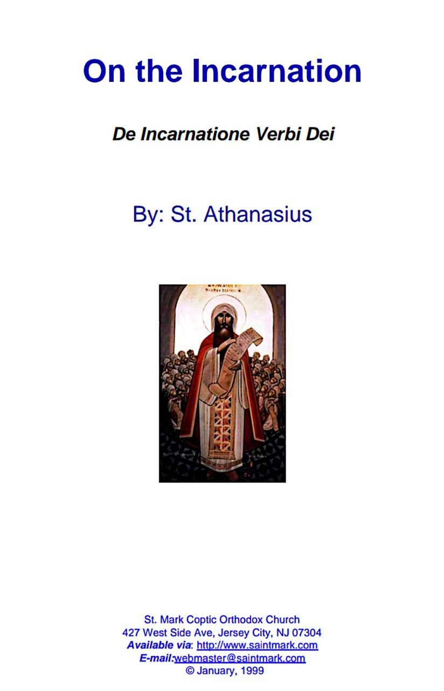
"On the Incarnation" by St. Athanasius presents a powerful explanation of how God became man for the salvation of humanity. It defends the true doctrine of Christ against false teachings and calls believers to stand firm in faith and truth.
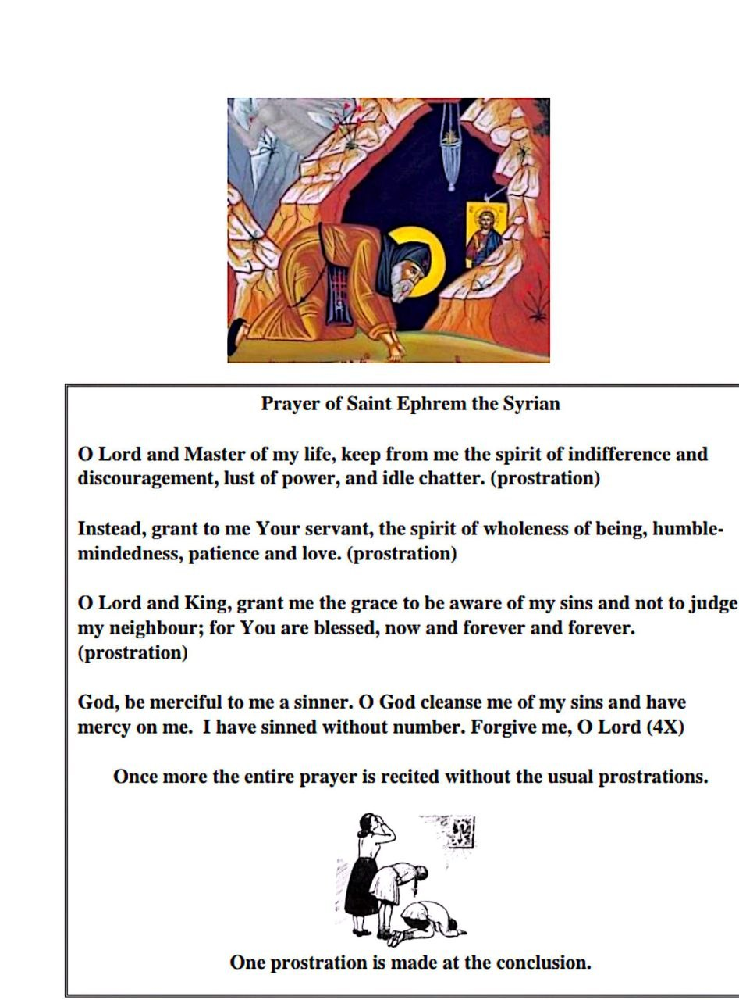
The Prayer of Saint Ephrem the Syrian is a powerful prayer of repentance that helps believers reflect on their inner life. It asks God to remove negative habits such as pride and distraction, and to fill the heart with humility, patience, and love. This prayer encourages spiritual growth and a deeper connection with God through daily reflection.
This book explains that church teachings (dogmas) are not just ideas to study, but truths to live every day. It shows how faith is experienced through a real relationship with God, guiding believers to grow spiritually and live a life centered on Christ.
This book presents a spiritual reflection on the Book of Revelation, highlighting its message of hope, joy, and victory. It helps readers see the heavenly vision of Christ and understand God’s plan for the future, encouraging them to remain faithful even in times of difficulty.
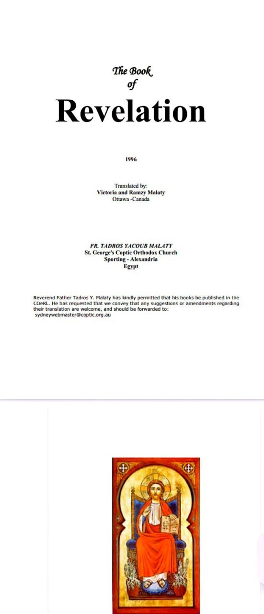
The Book of Revelation presents a powerful message of hope, victory, and heavenly joy. It reveals God’s eternal plan for humanity, showing that despite struggles, there is glory, peace, and everlasting life prepared for believers. It encourages readers to remain faithful and look forward to a life united with God in heaven.
The Book of Judges reflects the spiritual condition of God's people after receiving His blessings. While they were given a life of freedom and promise, they often became spiritually weak, lost their zeal, and turned toward wrong ways. Despite their failures, God remained faithful, allowing challenges to guide them back to Him. This message also applies to every believer, reminding us that spiritual growth requires consistency, and that returning to God brings renewal, strength, and true peace.
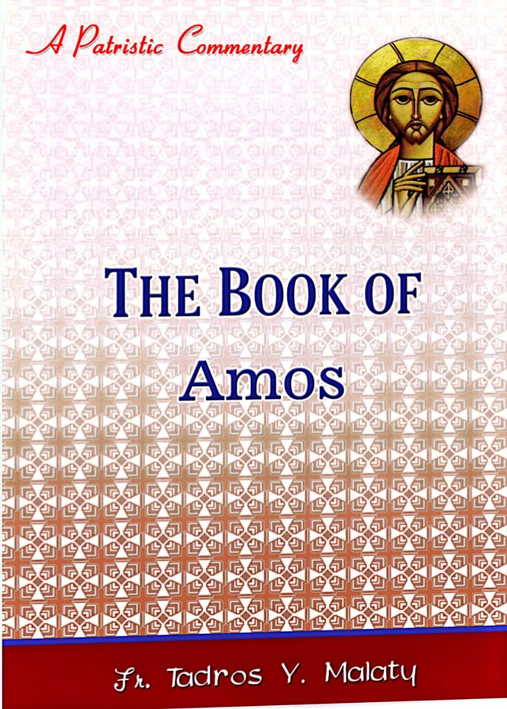
The Book of Amos introduces a prophet whose name reflects the burden of delivering God’s message. Amos spoke about the seriousness of sin and God’s justice toward all people. Though he was a simple man from a humble background, his message was powerful and clear, calling people to repentance and righteousness. His writings, rich with imagery from daily life, remind believers that God does not overlook wrongdoing, but calls everyone to live with integrity, faithfulness, and spiritual awareness.
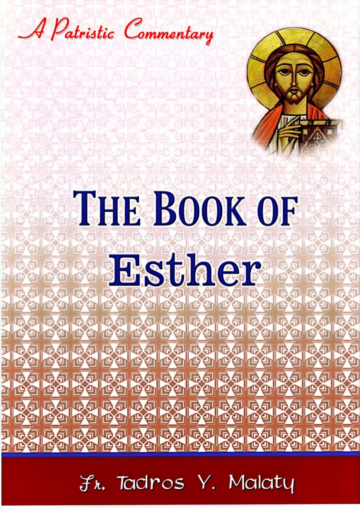
The Book of Esther tells the story of a young Jewish woman chosen as queen in a foreign land. Though living in exile, Esther played a key role in protecting her people through courage, wisdom, and faith. Even though the name of God is not directly mentioned in the book, His care and guidance are clearly seen throughout the events. The story reminds believers that God is always present, working behind the scenes to protect and guide His people, even in difficult circumstances.
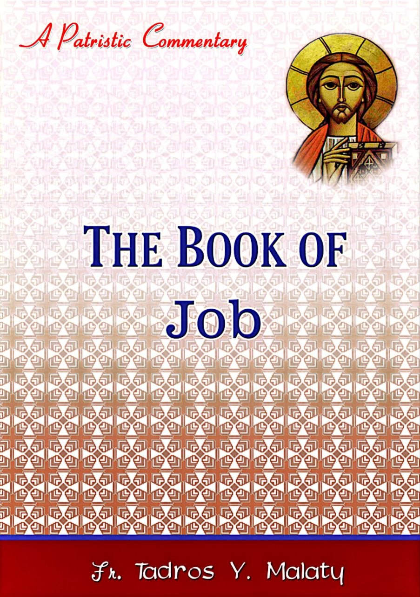
The Book of Job is a timeless message about human suffering and faith. It tells the story of a righteous man who faced great trials without fully understanding their purpose. Through his patience and endurance, Job becomes an example of how believers should remain faithful during difficult times. The book shows that suffering is not always a result of wrongdoing, and that God’s wisdom and plans go beyond human understanding. It reminds us to trust in God, remain patient, and stay strong in faith even in the midst of challenges.
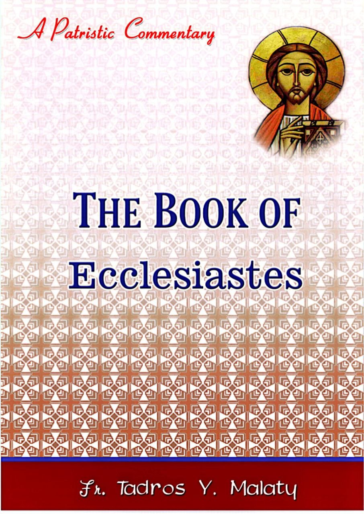
The Book of Ecclesiastes teaches that many of the things people pursue in life, such as wealth, pleasure, and worldly success, are ultimately temporary and cannot bring lasting fulfillment. It reminds us that true meaning is not found in material things, but in wisdom, faith, and a relationship with God. The difference between wisdom and foolishness is clear, as wisdom leads to understanding and light, while foolishness leads to confusion and emptiness. This book encourages believers to seek God, live wisely, and find peace in what He provides rather than in passing earthly desires.
The Book of Habakkuk presents a prophet who openly questions God about the presence of evil and suffering in the world. Through a sincere and honest dialogue, God reveals that He is always in control, even when events seem confusing or unjust. The book teaches that faith involves trusting God’s wisdom beyond human understanding, and that believers should remain hopeful even during difficult times. It also highlights the importance of a close relationship with God, where one can speak openly, listen, and grow spiritually through both struggle and praise.
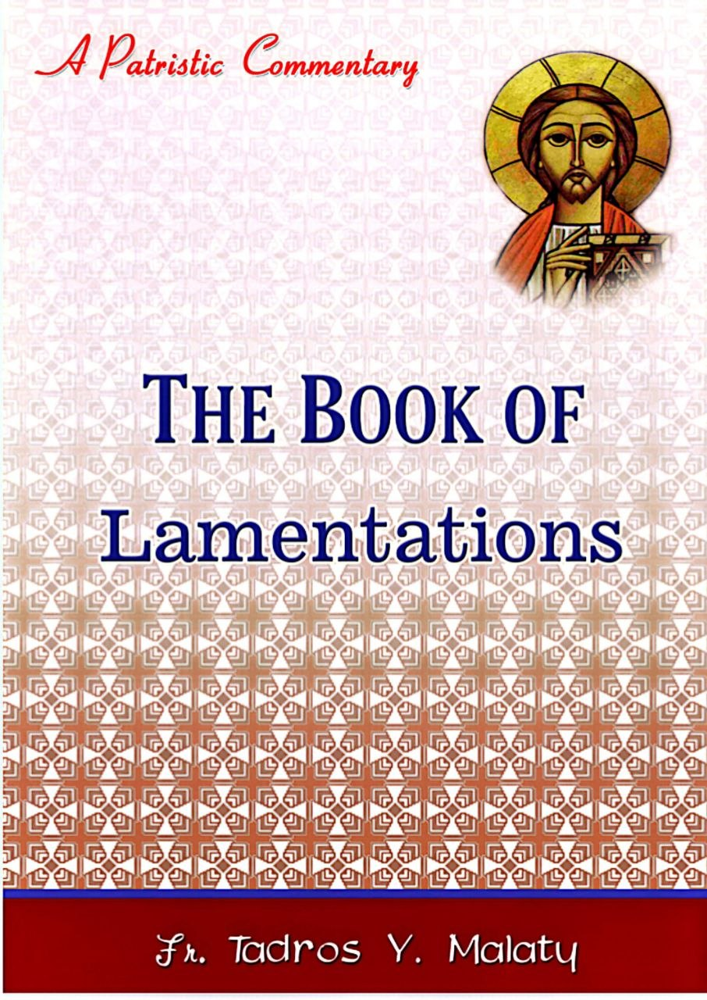
The Book of Lamentations expresses deep sorrow over the destruction of Jerusalem and the suffering of the people. It teaches that sin leads to painful consequences, yet it also reveals God’s mercy and the hope of restoration. Through sadness and reflection, believers are encouraged to recognize their mistakes, return to God, and seek forgiveness. The book reminds us that even in times of suffering and discipline, God’s love remains, and His desire is to restore His people and fill them with hope and peace once again.
“Reading spiritual books daily brings wisdom, peace, and purpose to life.”